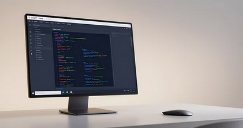
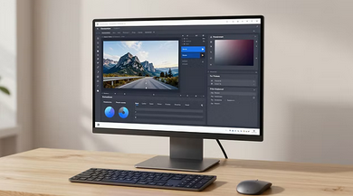
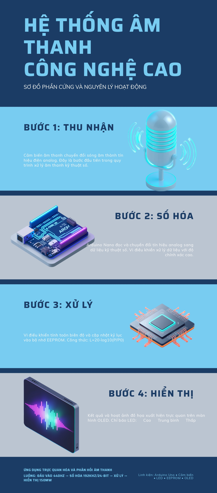

Tập trung vào việc thiết kế và sản xuất nội dung đa phương tiện ứng dụng các công cụ trí tuệ nhân tạo tối ưu hiệu quả đồ án kỹ thuật:



Tiêu chuẩn sản phẩm đồ án đạt được:
➔ Bố cục & Phân cấp thị giác chuyên nghiệp: Logic dòng chảy từ trên xuống dưới (Thu nhận -> Số hóa -> Xử lý -> Hiển thị) cực kỳ rõ ràng, phân màu các khối khoa học.
➔ Nội dung học thuật chuẩn xác: Sử dụng đúng thuật toán xử lý tín hiệu thực tế (Công thức Logarit cường độ âm thanh $L=20 \times \log_{10}(P/P_0)$, bộ nhớ EEPROM, vi điều khiển) bám sát chuyên ngành.
➔ Chất lượng đồ họa cao & Đồng nhất: Hình ảnh minh họa 3D isometric cho phần cứng (Arduino, Chip, Mic) sắc nét, tạo cảm giác hiện đại và tăng tính thuyết phục cho sản phẩm truyền thông số.
← Quay lại mục lục chính